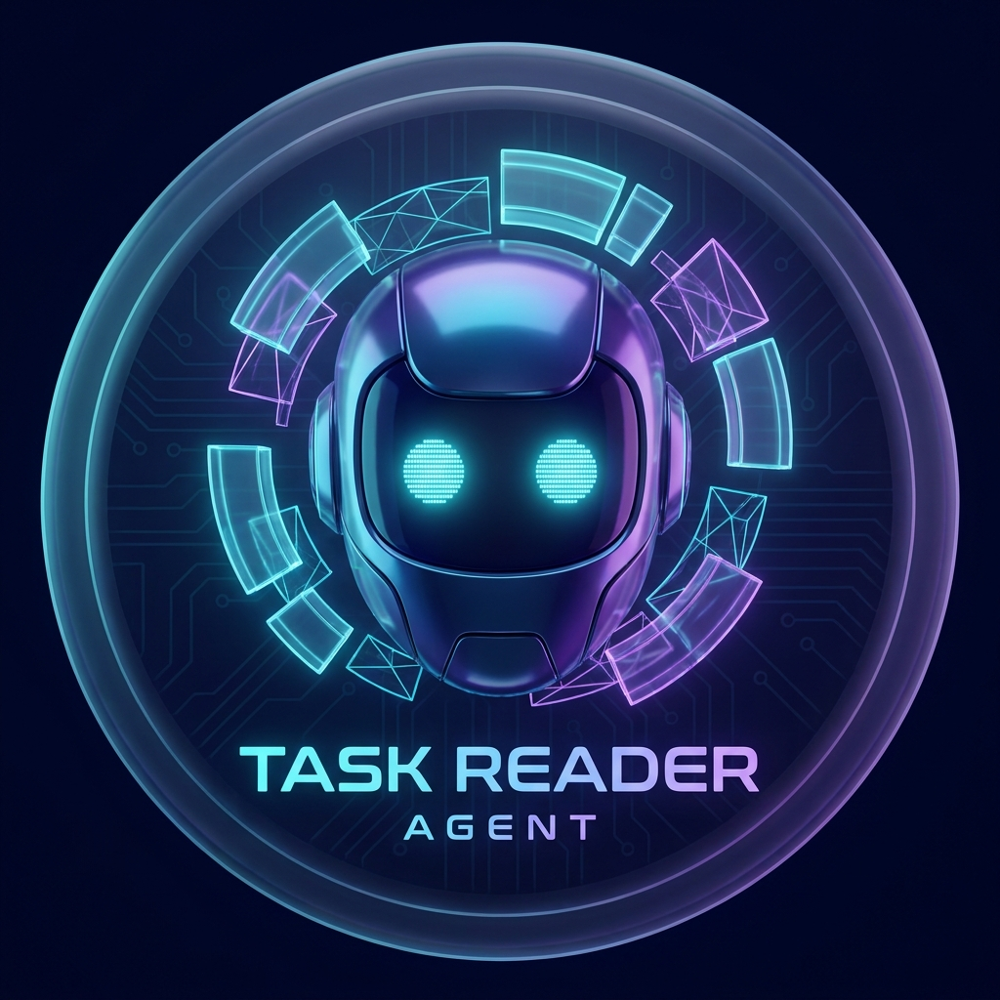
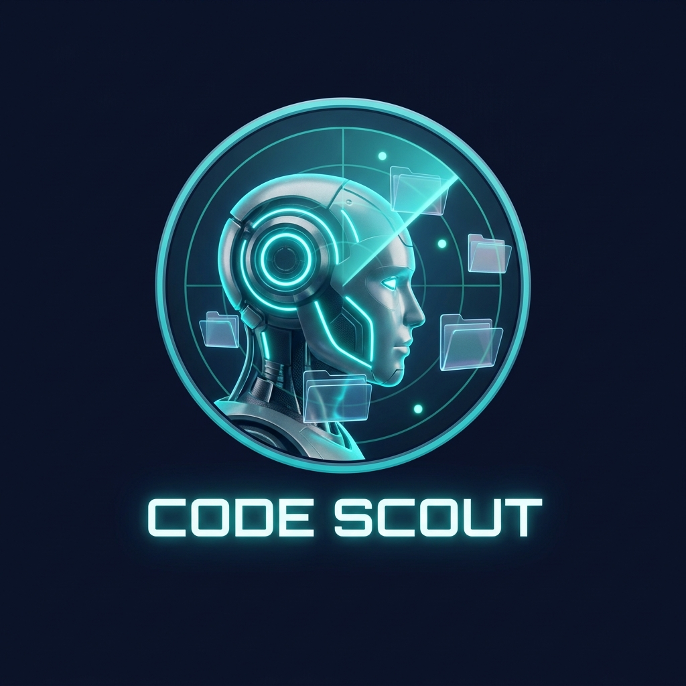
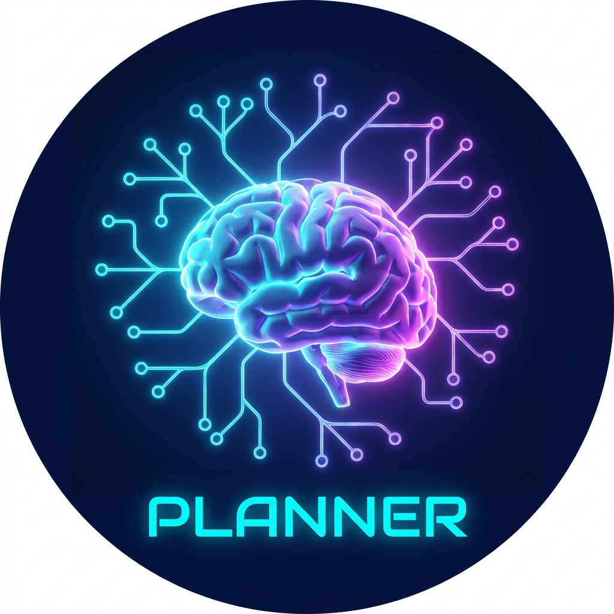
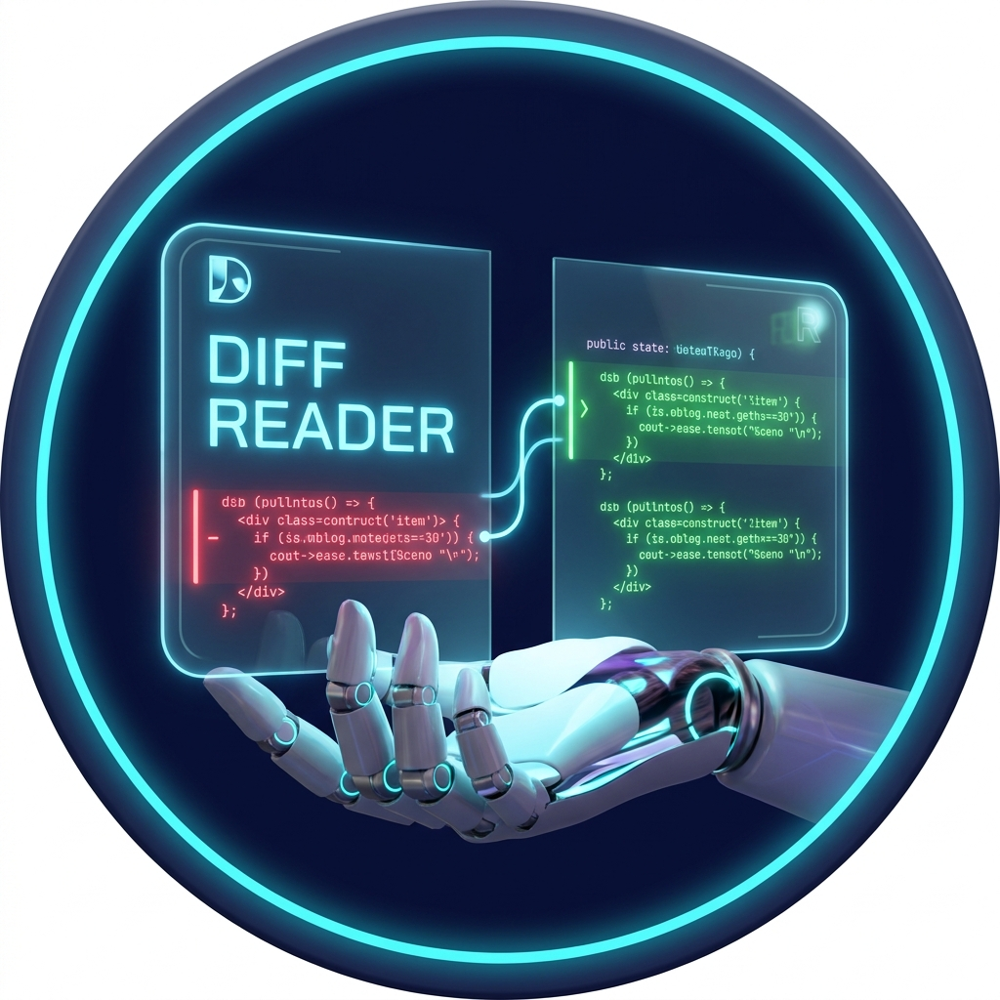
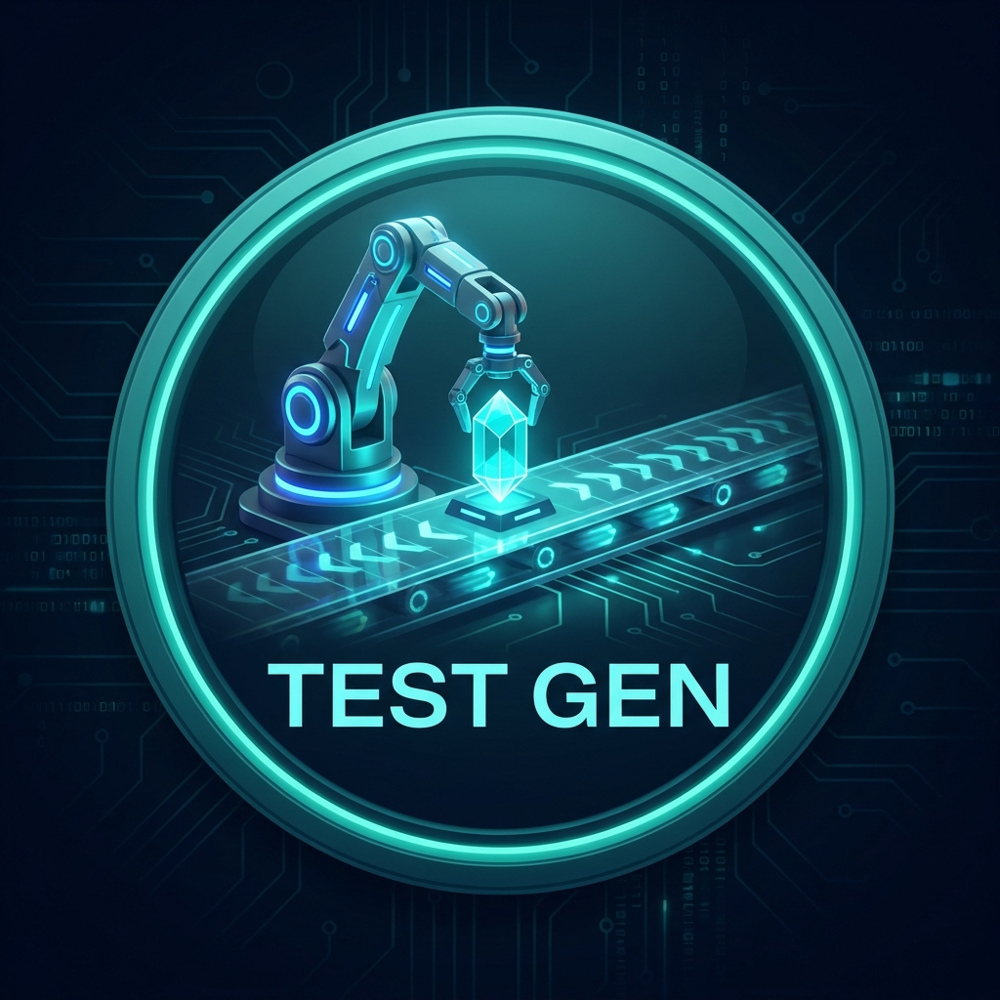
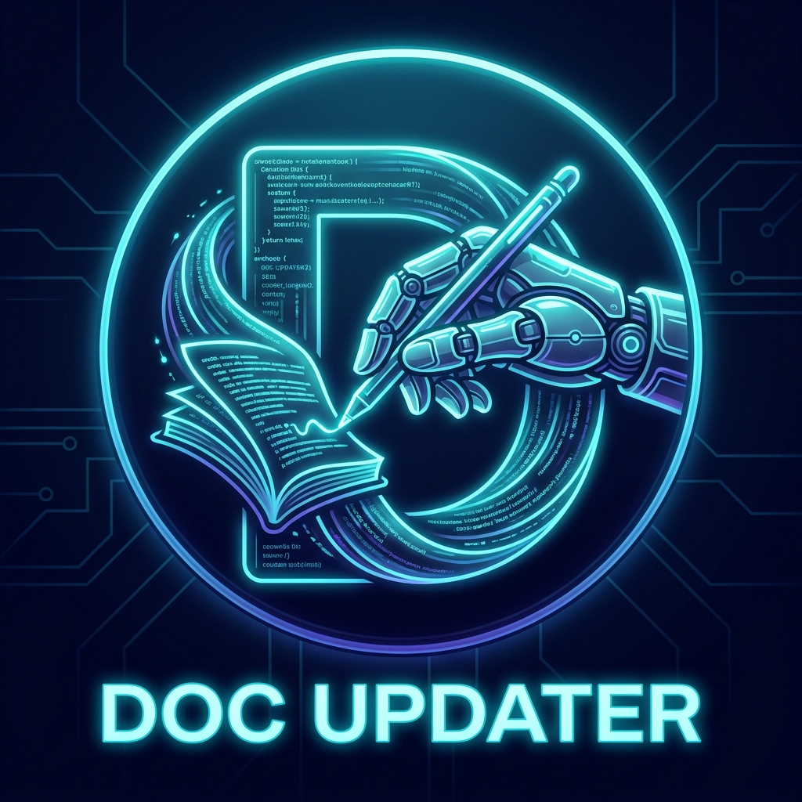

Ship faster.
Think in agents.
A structured Claude workflow system for software teams. 26 slash commands, 7 AI subagents, and role-based flows — from discovery to deploy.

From idea to production — with AI at every step
Each phase of the lifecycle has a dedicated slash command, subagent delegation, and structured output.
Ideate
Capture & clarify the idea
Spec
Write user stories & acceptance criteria
Analyze
Risk classify & plan implementation
Implement
Code with structured output artifacts
Review
AI-assisted PR review
Test
Generate & execute test plans
7. DEPLOY
Deploy to production environments.
Every role has a dedicated flow
26 skills chained into proven flows — from Discovery to Deploy. Select your role to see the corresponding workflow.
Bridge Engineer — JP Outsource Entry
Receive JP client request → translate → create bilingual JP-VN spec.
| SKILL | PREREQUISITE |
|---|---|
| /ba:user-story | /ba:spec done |
| /pm:breakdown | /ba:user-story or User Stories exist |
| /dev:analyze | Risk Classifier run + Issue/task clear (AC defined) |
| /dev:implement | docs/tasks/[ID]/analysis.md exists |
| /dev:review | /dev:implement Step 5 done + verification.md saved + Harness Delta check done |
| /dev:pr | /dev:review Approved + no blocking issues |
| /docs:update | PR merged |
| /qa:regression | All sprint PRs merged |
| /ops:deploy | /qa:regression signed off |
The complete agentic toolkit
Every command outputs structured artifacts. Every artifact feeds the next command.
Multi-Agent Pattern
Heavy tasks spawn specialized lightweight subagents — haiku for parsing, sonnet for synthesis — keeping your main context window clean.
Human-in-the-Loop
Every command includes mandatory decision gates. Claude presents options and waits for your approval. No blind execution, ever.
Two-Tier Documentation
Ephemeral per-task docs (gitignored) for in-progress work, plus living baseline docs updated after each verified merge.
Developer Lite Option
A minimal subset for teams needing only core dev workflow — without PM/BA/QA/Ops overhead. 8 focused commands, install in seconds.
Security-First Review
Built-in OWASP Top 10 security review with Always/Ask/Never classification. Security is part of the workflow, not bolted on.
Full SDLC Coverage
From ideation to deployment — BA, PM, Dev, Arch, QA, DevOps, Security, Docs, and Scrum roles all covered in one cohesive framework.
Every phase. Every role.
Structured, role-aware commands covering every sprint lifecycle phase. Filter by category.
Refine vague idea → clear concept with problem statement + NOT Doing list
Raw requirement → structured spec → requirements.md
Spec → User Stories with Acceptance Criteria
Reverse engineer legacy codebase → baseline docs
Translate JP requirements, create bilingual JP-VN deliverables
Epic/Stories → Tasks with estimates + GitHub/GitLab Issues
Sprint status report for stakeholders
Static HTML sprint dashboard with kanban + health + backlog
Task → 2-3 implementation options with trade-offs → analysis.md
Implement file-by-file with human gates + verification + harness delta check
Holistic review: code quality + architecture + security in one run
Generate comprehensive PR description from diff
Structured debugging: reproduce → localize → fix
Design decision review with trade-off analysis
Create Architecture Decision Record → docs/decisions/ADR-NNN.md
Spec → Test plan → test-plan.md
Standardized bug report with reproduction steps
Regression checklist before release
Deployment checklist + CI quality gate + rollback plan
Incident triage + parallel investigation + RCA template
OWASP Top 10 audit: Always check / Ask First / Never classification
Update baseline screen/API docs after task verify
Sync project-level docs: README, workflow guides, CLAUDE.md
Daily standup summary for the team
Sprint retrospective in structured format
Specialized AI Agents
Heavy tasks delegate to lightweight subagents — keeping your main context window clean and focused.

task-reader
Parse issue → structured JSON for downstream agents

code-scout
Find relevant files and symbols across the codebase

planner
Synthesize implementation options and plan approach

diff-reader
Map diff output to acceptance criteria coverage
review-reader
Parse PR diff and extract actionable review signals

test-gen
Generate structured test cases from specification

doc-updater
Update baseline documentation after code changes
Built for the JP–VN outsource model
Optimized for VTI Software — a Vietnamese dev team working with Japanese clients via Bridge Engineers. Bilingual delivery commands out of the box.
BRIDGE ENGINEER
Translates JP client requirements → VN team spec using /be:bridge
BA WRITES VIETNAMESE SPEC
From clarified requirements using /ba:spec
DEV IMPLEMENTS WITH AI GUIDANCE
Code comments in English, structured via /dev:implement
JP-FORMATTED DELIVERABLES
設計書、単体テスト仕様書、成果物 formatted for Japanese clients
ユーザーログイン機能の実装
セキュリティ要件：パスワード強度チェック必須
Triển khai chức năng đăng nhập người dùng
Yêu cầu bảo mật: kiểm tra độ mạnh mật khẩu bắt buộc
// Validate password strength per JP security spec
// Min 8 chars, 1 uppercase, 1 number, 1 symbol
function validatePassword(pwd) { ... }
Deploy in 60 seconds
One command initializes the full ADLC workspace — commands, subagents, templates, and documentation scaffolding.
[1/4] Resolving packages...
[2/4] Fetching orchestration blueprints...
[3/4] Initializing Claude Code environment...
✔ ADLC v1.0.4 successfully initialized.
.claude/commands/ — 26 skill files ready
agents/ — 7 subagent definitions loaded
templates/, docs/workflows/ — scaffolded
macOS / Linux
npx github:hiepdnh/Agentic-Development-Lifecycle --yes
Windows
$tmp="$env:TEMP\vti"; mkdir $tmp; cd $tmp; npx ... --yes
Developer Lite
node packages/developer-lite/bin/install.js --yes